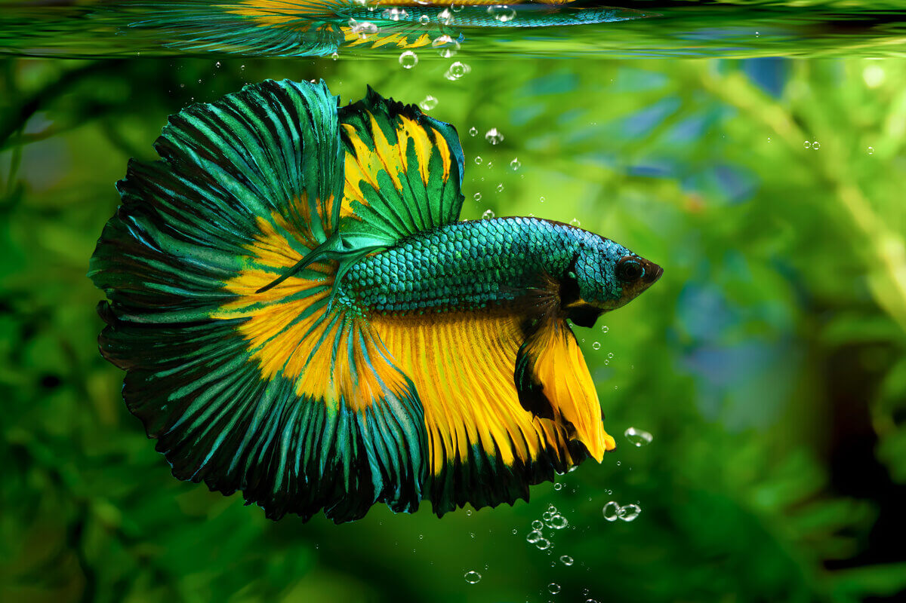
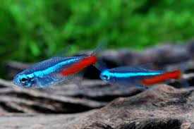
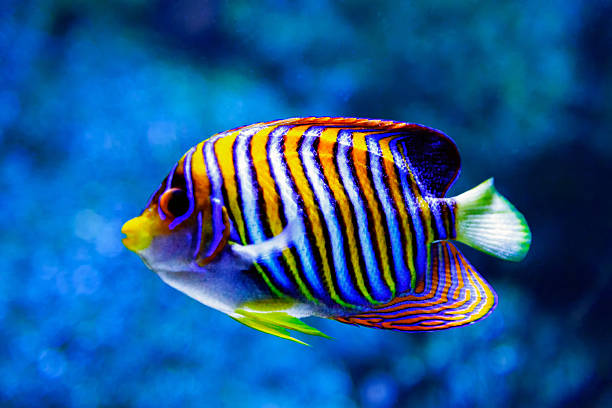
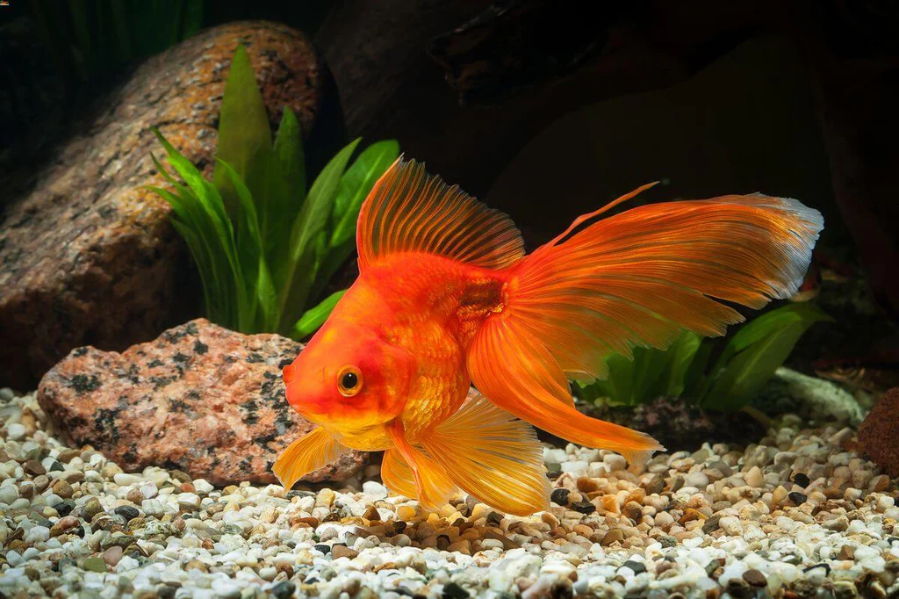
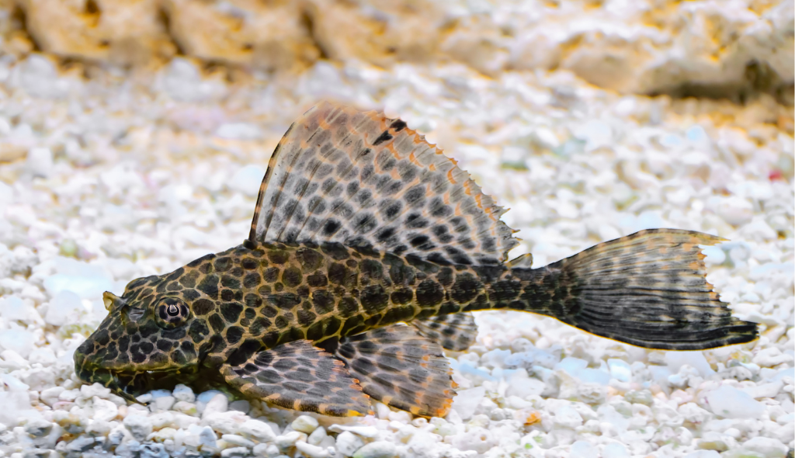

Espécies de Peixes
Explore o mundo aquático e conheça as espécies mais fascinantes de peixes!

Betta
O betta é conhecido por suas cores vibrantes e comportamento territorial.

Neon Tetra
Pequeno e muito popular em aquários, o Neon Tetra possui uma cor azul brilhante.

Angelfish
O angelfish é um peixe majestoso com nadadeiras longas e elegantes.

Goldfish
O peixe dourado é conhecido pela sua longevidade e pelo seu comportamento calmo.

Peixe das anêmonas
Mais conhecido como peixe-palhaço, peixe-das-anêmonas ou simplesmente nemo. Com coloração alaranjada e listras brancas, habita águas calmas e pouco profundas dos oceanos Pacífico e Índico.

Plecô
O pleco é um peixe de fundo, conhecido por sua habilidade em limpar aquários, com uma aparência robusta.